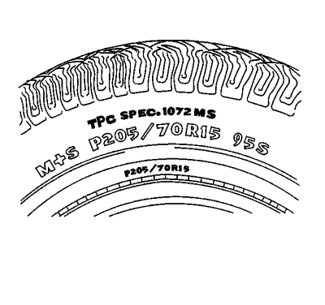
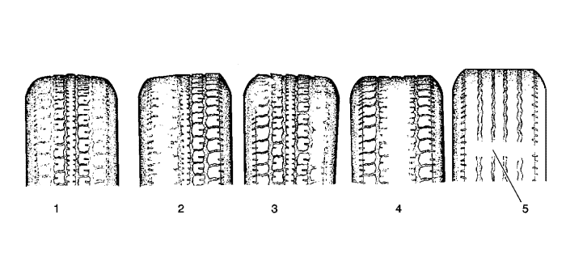

Inspección de neumáticos y llantas

Los neumáticos en todos los modelos de nueva producción disponen de un número distintivo, el criterio de rendimiento del neumático (TPC), impreso en su pared lateral. El distintivo TPC aparece como un número de 4 cifras precedido por las letras TPC SPEC en la pared del neumático, cerca del tamaño. Un neumático de sustitución debe tener el mismo distintivo TPC.
Información de servicio
Desgaste del neumático

|
|---|
| (1) | Capacidad de giro rígida/Inflado insuficiente |
| (2) | Alineación incorrecta/Falta de rotación |
| (3) | Alineación incorrecta/Neumático no uniforme |
| (4) | Aceleración pesada/Inflado excesivo |
| (5) | Indicador de desgaste |
Inspeccione los conjuntos de neumático y llanta en busca de:
| • | Un desgaste inusual, como elevación del dibujo, puntos lisos y/o desgaste del talón y base |
| | Estas condiciones pueden ocasionar el 'gruñido' o zumbido del neumático, ruido por palmeteo y/o vibraciones en todo el vehículo. |
| • | Realice un inflado correcto según las especificaciones del vehículo |
| • | Abolladuras en las paredes laterales |
| | No equivoque las abolladuras, una condición anómala, con la unión de las láminas que a menudo se observan como indentaciones en la pared lateral. |
| • | Talones de llanta doblados |
| © Copyright Chevrolet Europe. All rights reserved |